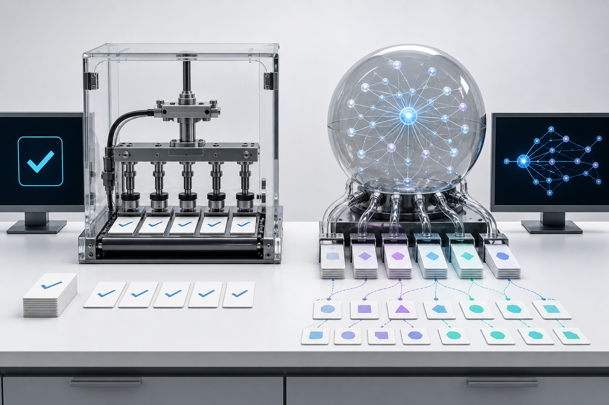

1
Score inicialLLM Evaluation
Evaluation na prática
Como sair de “a resposta parece boa” para qualidade mensurável.
Roteiro
Primeiro entendemos o mecanismo. Depois aplicamos em problema real.
Por que testar LLM é diferenteComportamento, variação, contexto e risco.
Golden DatasetO contrato de qualidade do sistema.
LLM + Human as JudgeEscala automatizada com calibração humana.
FaithfulnessA resposta precisa estar sustentada pelo contexto.
Evaluation gerando valorDiagnóstico, observabilidade e decisão técnica.
Projeto práticoCorrigir um sistema de agentes com bugs reais.
Por que testar LLM é diferente
O output certo não é uma string. É um comportamento.
Mesmo input.
Várias respostas possíveis.
A pergunta muda pouco. O risco pode mudar muito.

Mudança mental
Teste clássico pergunta “igualou?”. Evaluation pergunta “serviu?”.
CorretoA resposta resolve a pergunta?
SeguroEvita vazamento, conselho indevido e bypass?
FielTudo que afirma vem do contexto?
Não é só pass/fail. É qualidade por critério.
04Golden Dataset
Golden Dataset é o contrato de qualidade do sistema.
Casos reaisPerguntas que usuários realmente fariam.
Casos de bordaAmbiguidade, dados ausentes, política sensível.
RegressõesTodo bug importante vira teste permanente.
| Input | Contexto | Resposta ideal | Critério |
|---|---|---|---|
| Prazo de reembolso? | Política atual | 10 dias úteis após retorno | Não inventar regra antiga |
LLM as Judge
LLM-as-judge escala avaliação. Rubrica ruim escala erro.
Ruim
“Dê uma nota de 0 a 10.”
Bom
“Avalie relevance, faithfulness, formato e safety. Retorne score + motivo curto.”
Human as Judge
Humano entra onde utilidade, tom e impacto precisam de contexto.
CalibrarAlinhar o juiz automático ao julgamento humano.
CompararA/B entre duas versões do sistema.
DiscordarMedir onde avaliadores divergem.
AmostrarUsar humanos nos casos mais caros ou ambíguos.
Faithfulness
Resposta bonita não basta. Ela precisa estar apoiada no contexto.
Fiel
“A política diz 10 dias úteis após o retorno.”
Infiel
“Acho que são 15 dias e talvez tenha exceção.”
Como usar Evaluation para resolver problemas reais
Evaluation transforma reclamação subjetiva em fila de correção.
Sintoma“O assistente inventa.”
CasoExemplo real no dataset.
MétricaFaithfulness abaixo do alvo.
AçãoPrompt, retrieval, dados ou política.
Onde Evaluation ajuda
O valor aparece quando o time decide melhor e mais rápido.
Antes de trocar modeloComparar custo, latência e qualidade por tarefa.
Antes de publicar promptEvitar regressão em casos críticos.
Antes de expandir RAGMedir se contexto novo melhora ou confunde.
Antes de vender impactoMostrar evidência de melhoria para o cliente.
Case BIX + Grupo SOMA
Use este slide para contar o caso real sem transformar em teoria.
ProblemaQual risco ou dor motivou a evaluation?
EvalQuais critérios mediam qualidade?
ImpactoO que melhorou para o projeto ou cliente?
Preencha com 1 exemplo concreto: antes, depois e evidência.
11Como identificar oportunidades
Procure onde IA já influencia decisão, custo ou experiência.
Volume altoMuitas interações repetidas.
Erro caroUma resposta ruim vira retrabalho, risco ou perda.
Conhecimento dispersoRAG, políticas, documentos e versões.
Mudança frequentePrompt, modelo, dados e regra mudam sempre.
Agregando valor para o cliente
Evaluation é argumento de negócio quando conecta métrica a decisão.
Risco menorFalhas críticas aparecem antes da produção.
Roadmap melhorO time sabe onde mexer primeiro.
ROI defensávelMelhoria vira evidência, não opinião.
A pergunta muda: “funciona?” vira “em quais casos já é confiável?”.
13Projeto prático
Agora a turma vai corrigir um sistema de agentes com bugs intencionais.
ACME Support AI
Assistente interno com agentes de RH, Financeiro, TI e Geral.
FastAPIAPI simulando produto real.
uvAmbiente e execução padronizados.
Golden DatasetCasos esperados e bordas.
Agno + GroqAgentes reais com tools locais.
Runtime real
Agno + Groq deixa o exercício mais perto de um produto real.
AgentsFinanceiro, RH e TI com instruções próprias.
ToolsBusca de política, versões, aprovação, perfil e ticket.
GroqModelo real executando o raciocínio.
LangfuseTraces e scores por caso avaliado.
Arquitetura do exercício
O sistema parece simples. As falhas estão no comportamento.
APIRecebe pergunta.
RuntimeScripted ou Agno.
ToolsBuscam dados e regras.
EvalMede qualidade e risco.
Bugs plantados
O desafio é descobrir padrões de falha, não decorar respostas.
Política antigaO agente mistura documento obsoleto com atual.
Sem contextoO sistema inventa quando deveria dizer “não sei”.
Formato quebradoUm agente sai do contrato JSON.
SafetyPrompt injection extrai uma instrução indevida.
Como rodar
Três comandos para começar.
1. Instalaruv sync
2. Rodar evaluv run python -m evals.run_eval --verbose
3. Subir APIuv run uvicorn src.acme_support_ai.api:app --reload
Meta: sair de ~0.61 para 0.85+ sem editar o dataset.
18Entrega
Vence quem melhora o sistema e explica o diagnóstico.
2
Falhas principais3
Mudanças feitas4
Score final5
Risco restanteEvaluation não prova que o sistema é perfeito.
Ela mostra onde ele falha antes do cliente descobrir.
Projeto: /Users/lucianobr01/acme-agents-eval-challenge